УСЛУГИ
ПОЧИСТВАНЕ НА ДОМОВЕ
Хигиената и чистотата на дома са от особена важност за всяко семейство. Искате ли да живеете в един перфектно чист дом без много усилия? Почистваща фирма PGR Cleaning ви предлага качествено еднократно или абонаментно почистване на домове в град София на ниски цени. Възползвайте се от нашите услуги за професионално почистване по домовете в град София, и домът Ви , ще заблести от чистота!
Потърсете ни и ,ще получите безплатна оферта за професионално почистване по домовете в цяла София. Нашият професионален екип е с голям опит в почистването на всякакъв вид замърсяване.Ние ще се погрижим домът Ви да е в безупречен вид.
Няма значение дали става дума за почистване на къща или апартамент,при еднократното основно почистване , нашите опитни служители почистват вашият имот из основи.С помощта на техниката и професионалните препарати които използваме резултатите са гарантирани.
- Почистване на кухня (външно)
- Почистване на прозорци и дограма
- Почистване и дезинфекция на санитарни възли
- Премахване на прах от мебели
- Прахосмукиране и измиване на твърди подови настилки
- Почистване на тераси (машинно)
- Почистване на ключове и контакти
- Почистване на врати и каси
За ваше удобство сме съставили голям набор от услуги, както за еднократно така и за абонаментно почистване по домовете в София на достъпни цени.
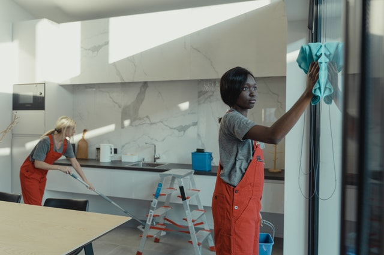 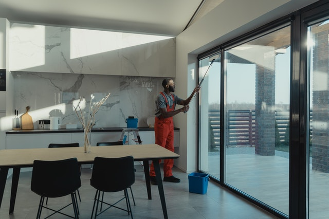 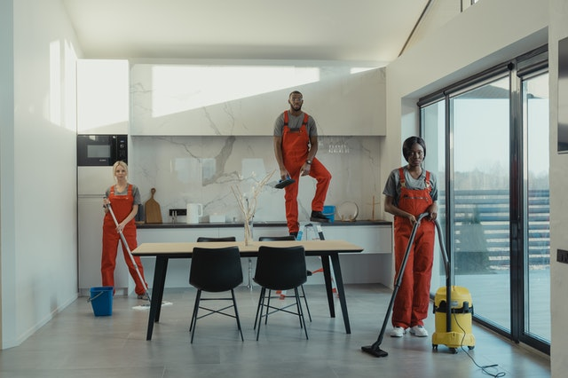ПОЧИСТВАНЕ НА ОФИСИ
Погрижете се за чистотата и комфорта на работното място който залсужавате . Фирма ви PGR Cleaning предлага професионално почистване на офиси . Чистотата и реда на работното място непременно допринасят за увеличаване на производителността, концентрацията и креативността на служителите, а също така и несъмнено е полезна за здравето. Ние знаем това и поради тази причина сме съставили асортимент от услуги и планове ориентирани именно към бизнес сектора. Почистваща фирма PGR Cleaning предлага както еднократно така и абонаментно почистване на офиси
Когато ни повикате да почистим вашия офис може да разчите , че ще получите професионално и качествено обслужване.Докато ние почистваме , вие може да се фокусирате върху основните си задължения на работно място.Когато ни наемете получавате:
- Опитен персонал
- Професионална почистваща техника и препарати
- Качествено обслужване
- Почистваме когато на вас ви е удобно
- Достъпни цени
Доверете се на нашия екип за почистване на офиси в София, а той ще осигури необходимата чистота и комфорт за вашето работно място
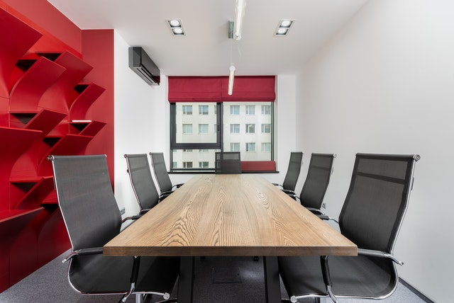 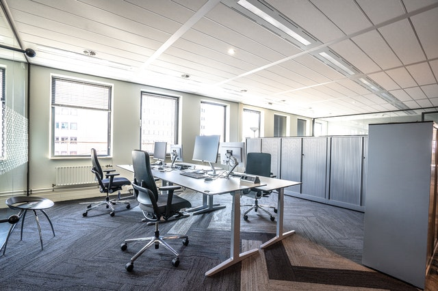 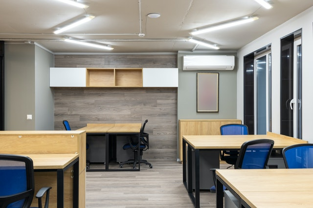ПОЧИСТВАНЕ СЛЕД РЕМОНТ
Почистваща фирма “Чистник" ще се погрижи да не остане и помен от замърсяването след ремонтни дейности. Подготвени сме за всякакви замърсявания. Работим само с професионална техника и доказани препарати. Не се колебайте и ни потърсете , а ние ще се погрижим имотът ви да заблести.Услугата почистване след ремонт включва следните дейности:
- Премахване на прахта от всяко кътче
- Отстраняване на засъхнали цимент, мазилка, гипс, латекс и боя
- Почистване на всякакъв вид дограма и витрини
- Обстойно почистване на под, стени, врати, баня, тоалетна, тераси, офис мебели ,офис техника ,осветителни тела и контакти
- събиране на отпадъците в чували
Независимо колко внимателни сте били по време на ремонта, независимо дали сте покрили пода и мебелите, на места винаги остават малки капчици боя, дебел слой прах, капки разтвор или цимент.
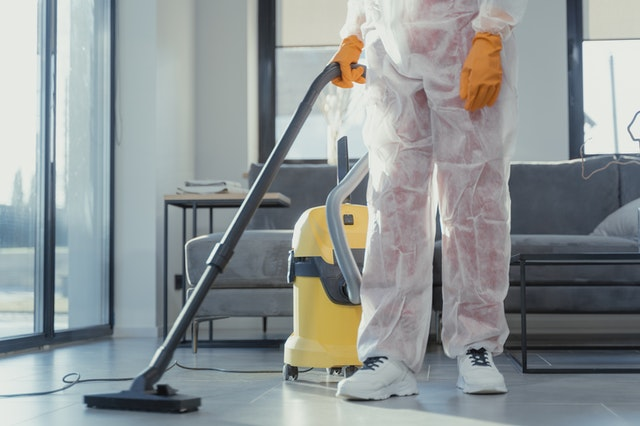 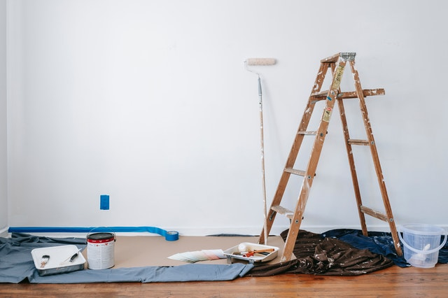
ПОЧИСТВАНЕ НА ТЪРГОВСКИ ОБЕКТИ
Когато става въпрос за търговски обект, като магазин или заведение, въпросът за чистотата и хигиената излиза на първо място. Ако можете да направите компромис с чистотата в собствения си дом и да отложите почистването за следващата седмица, то нещата стоят по коренно различен начин, когато става дума за обществени сгради.
Ако тези сгради са средище на извъшвана търговия или обществено хранене, чистотата в тях трябва да бъде на професионално ниво. Освен, че ще отблъснете клиенти от своето търговско помещение, ще поемете риск от проблеми със здравните власти. Почистването на търговски обекти трябва да бъде предоставено задължително в ръцете на професионален екип.
- Машинно почистване на твърди подови настилки
- Машинно изпиране на мека мебел
- Измиване на прозорци
- Основно почистване
- Дезинфекция
В магазините подовете и повърхностите се замърсяват изключително бързо, заради големия наплив от хора. Предлагайки професионално почистване на магазини ние гарантираме за чистота и свежест в него. Нашите хигиенисти въоръжени с доказани препарати и специална техника за почистване на големи помещения, ще се погрижат вашият търговски обект да изглежда чист и приветлив на разумни цени .
 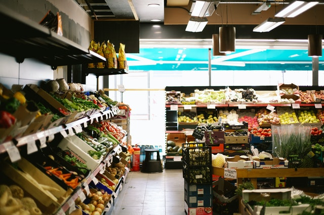
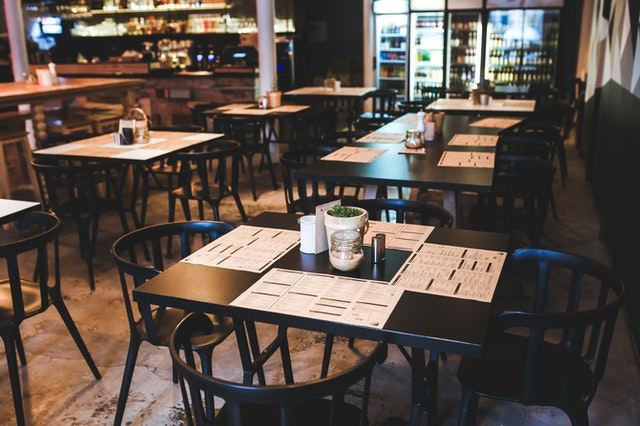
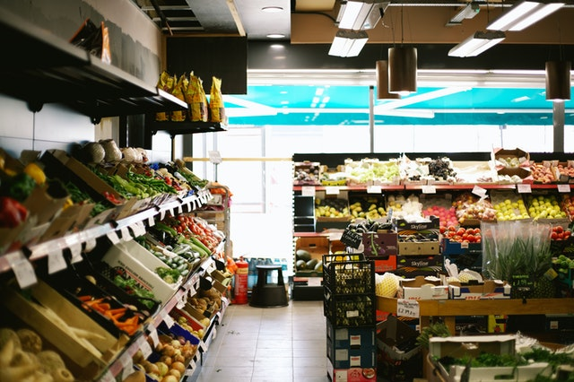
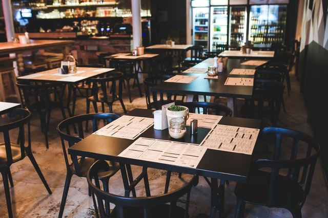
АБОНАМЕНТНО ПОЧИСТВАНЕ
Графикът за хигиенизиране, както и дейностите са предварително фиксирани. Определяме ги след оглед, идентифициране на нуждите и максимално ефективно разпределяне на бюджета ви.Безкомромисното качество на услугите е наш основен приоритет. Затова разработихме специална система за контрол на качеството. Целият процес е описан по часове, дейности и служител за изпълнението им.
- Почистване на подове (прахосмукиране, измиване на твърди настилки със специализирани препарати)
- Почистване и обезпрашаване на работно място (бюро, компютър)
- Дезинфекция на работни повърхности и подове
- Почистване на санитарни помещения
- Събиране и изхвърляне на отпадъци
- Почистване на осветителни тела
На терен винаги присъства отговорник за обекта, който следи за качеството на работата. Всеки обект има и мениджър, който проверява за изпълнението на дейностите веднъж дневно и спазването на високите ни стандарти за чистота.
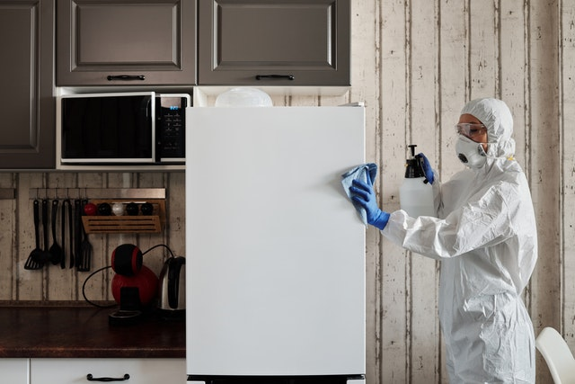 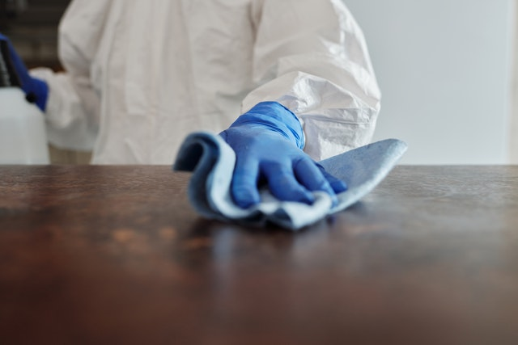 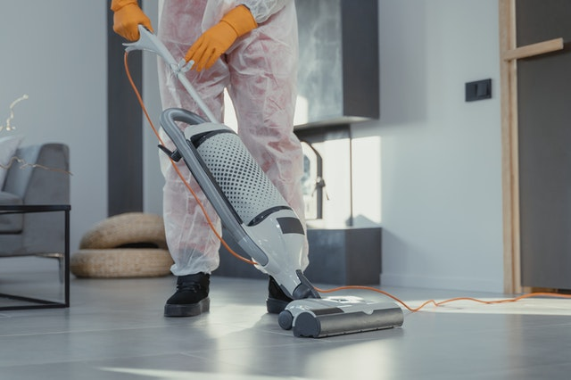